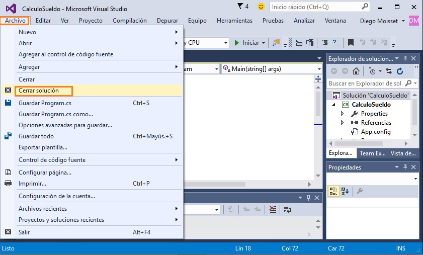

Confeccionaremos un problema y agregaremos adrede una serie de errores tipográficos. Este tipo de errores siempre son detectados por el COMPILADOR, antes de ejecutar el programa.
A los errores tipográficos, como por ejemplo la falta de puntos y comas, nombres de variables incorrectas, falta de paréntesis, palabras claves mal escritas, etc. los llamamos errores SINTACTICOS.
Un programa no se puede ejecutar sin corregir absolutamente todos los errores sintácticos.
Existe otro tipo de errores llamados ERRORES LOGICOS. Este tipo de errores en programas grandes (miles de líneas) son más difíciles de localizar. Por ejemplo un programa que permite hacer la facturación pero la salida de datos por impresora es incorrecta.
Problema:
Hallar la superficie de un cuadrado conociendo el valor de un lado.
Diagrama de flujo:

Proyecto:
Creemos un proyecto llamado SuperficieCuadrado.
Recordemos que si tenemos un proyecto abierto actualmente debemos cerrarlo desde Archivo -> Cerrar solución:
Codificamos el algoritmo en C# e introducimos dos errores sintáctico:
1 - Disponemos el nombre del objeto Console con minúsculas.
2 - Tratamos de imprimir el nombre de la variable superficie con el primer caracter en mayúsculas.

Como podemos observar aparece subrayado la línea donde disponemos console con minúsculas como en la línea que imprimimos la variable superficie con mayúsculas. Si modificamos y corregimos los dos errores sintácticos podremos ejecutar nuestro programa.
Programa correctamente codificado:
using System;
using System.Collections.Generic;
using System.Linq;
using System.Text;
using System.Threading.Tasks;
namespace SuperficieCuadrado
{
class Program
{
static void Main(string[] args)
{
int lado;
int superficie;
String linea;
Console.Write("Ingrese el valor del lado del cuadrado:");
linea = Console.ReadLine();
lado = int.Parse(linea);
superficie = lado * lado;
Console.Write("La superficie del cuadrado es:");
Console.Write(superficie);
Console.ReadKey();
}
}
}
Programa con un error lógico:
using System;
using System.Collections.Generic;
using System.Linq;
using System.Text;
using System.Threading.Tasks;
namespace SuperficieCuadrado
{
class Program
{
static void Main(string[] args)
{
int lado;
int superficie;
String linea;
Console.Write("Ingrese el valor del lado del cuadrado:");
linea = Console.ReadLine();
lado = int.Parse(linea);
superficie = lado * lado * lado;
Console.Write("La superficie del cuadrado es:");
Console.Write(superficie);
Console.ReadKey();
}
}
}
Como podemos observar si ejecutamos el programa no presenta ningún error de compilación. Pero luego de ingresar el valor del lado del cuadrado (por ejemplo el valor 10) obtenemos como resultado un valor incorrecto (imprime el 1000), esto debido que definimos incorrectamente la fórmula para calcular la superficie del cuadrado:
superficie = lado * lado * lado;